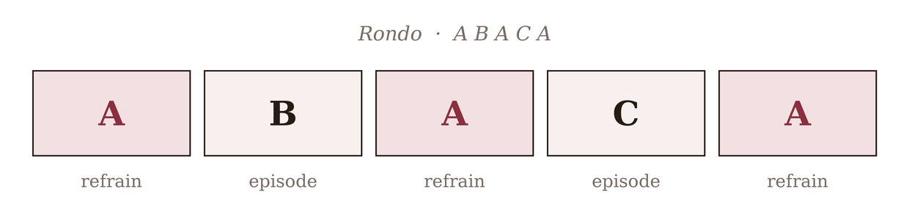
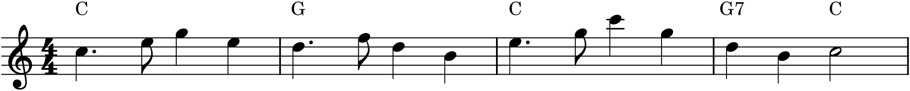

If ternary form is statement–contrast–return, the rondo is what happens when a piece falls in love with returning and cannot stop. A single memorable theme — the refrain — comes back again and again, and between its returns the music goes exploring, into one contrasting episode after another. The result is the most emphatically returning of all the forms, and one of the most immediately likeable: bright, catchy, and satisfying in the way a chorus is satisfying, because you know it will come round again. Rondos are everywhere as the finales of sonatas, symphonies, and concertos, where their good cheer sends a big work off with a smile.
25.1Refrain and episodes
A rondo alternates two kinds of section. The refrain (also called the rondo theme) is the recurring main tune, always in the tonic, always essentially the same — the thing that keeps coming back. The episodes are the contrasting sections in between, each with its own material and, crucially, its own key, that take the music away from home before the refrain hauls it back. Laid out, the classic shape is a chain of returns:

The pattern in Figure 25.1 — refrain, episode, refrain, episode, refrain — is the five-part rondo, the most common form. (Longer rondos add more episodes: A B A C A D A, and so on.) Notice that the refrain both opens and closes the piece and separates every episode from the next; it is the recurring anchor, and the whole form is organized around its returns.
25.2The refrain
Because the refrain comes back so many times, it carries a special requirement: it must be able to bear repetition. A theme you will hear three or four times had better be catchy, clear, and complete — like the A of a ternary form (Chapter 23), it is a self-contained little tune that begins and ends in the tonic, able to stand on its own each time it appears. And it had better be genuinely memorable, or its returns become tiresome rather than welcome.

The refrain in Figure 25.2 shows the type: light on its feet, clearly in C, ending with a proper cadence. The dotted rhythm gives it a spring in its step — rondos lean toward the playful and the dance-like — and its completeness means it can appear, whole, at every return without needing anything around it.
25.3The episodes
The episodes are where the contrast lives, and their job is to make each return of the refrain feel like a homecoming by having genuinely gone away. They contrast in two ways. In key: the first episode (B) commonly goes to a closely related key — the dominant, or the relative minor — while the second episode (C) often ventures further, to the subdominant or a more distant or minor key, for a stronger contrast the deeper the piece goes. And in character: an episode may be more lyrical, more stormy, more chromatic, or simply built from different material, so that the return of the familiar refrain lands with relief and pleasure. The C episode, farthest from home and usually the most contrasting, is often the emotional centre of the whole rondo.
25.4Rondo among the forms
You can see the rondo as ternary form extended: A B A is already the heart of it, and the rondo simply continues — another episode, another return (…C A). Everything you learned about ternary applies: the refrain is a closed unit like ternary’s A, the episodes are contrasting like ternary’s B, and the same principle of departure and return drives it. Two refinements are worth knowing. First, the refrain need not return identically — composers often vary it on its later appearances (shortened, reharmonized, more richly accompanied), borrowing the techniques of Chapter 24, so that even the constant element grows. Second, in larger works the rondo is often fused with the form of the next chapter into a hybrid called sonata-rondo — but that is a refinement to meet after you know sonata form itself.
25.5Where rondos live
The rondo’s cheerful, returning character makes it the natural choice for a finale — the last movement of a multi-movement work, where a composer wants to end in high spirits and send the listener off humming. Countless concerto and sonata finales are rondos, and the form also stands alone in shorter pieces (Beethoven’s Für Elise is a small rondo). Its appeal is fundamentally the appeal of the chorus in a song: the joy of the familiar thing coming back around, again and again, each time a little more welcome. Of all the forms, it is the one that most wears its structure on its sleeve — and the easiest for a listener, or a beginning composer, to grasp and to build.
In MuseScore
A rondo is built from one repeated section and several contrasting ones — which, as with theme and variations, is largely a job of copying and labelling.
- Write the refrain first as a complete, cadenced tune in the tonic (Chapter 23’s closed A).
- Copy it to each of its return points, so every A is in place before you write the episodes between them. If a later refrain should be varied, edit that copy (Chapter 24).
- Write each episode in a contrasting key — add a key signature or the new accidentals (Chapter 22) — and contrasting character, filling the gaps between refrains.
- Label the structure with rehearsal marks (Ctrl+M) — A, B, A, C, A — and use double barlines at section boundaries, so the rondo shape is visible on the page.
- For long refrains, avoid writing them out repeatedly with a dal segno jump (from the Repeats & Jumps palette), the same labour-saving device as ternary’s da capo.
Try it: take the refrain of Figure 25.2 (or your own catchy tune), copy it to make three A sections, and write two short contrasting episodes between them — try the dominant for B and the relative minor for C. Play the whole A B A C A through, and hear how each return of the refrain feels like coming home. You will have built a rondo — the most returning form of all, and a natural finale for the larger piece Part 5 will help you assemble.